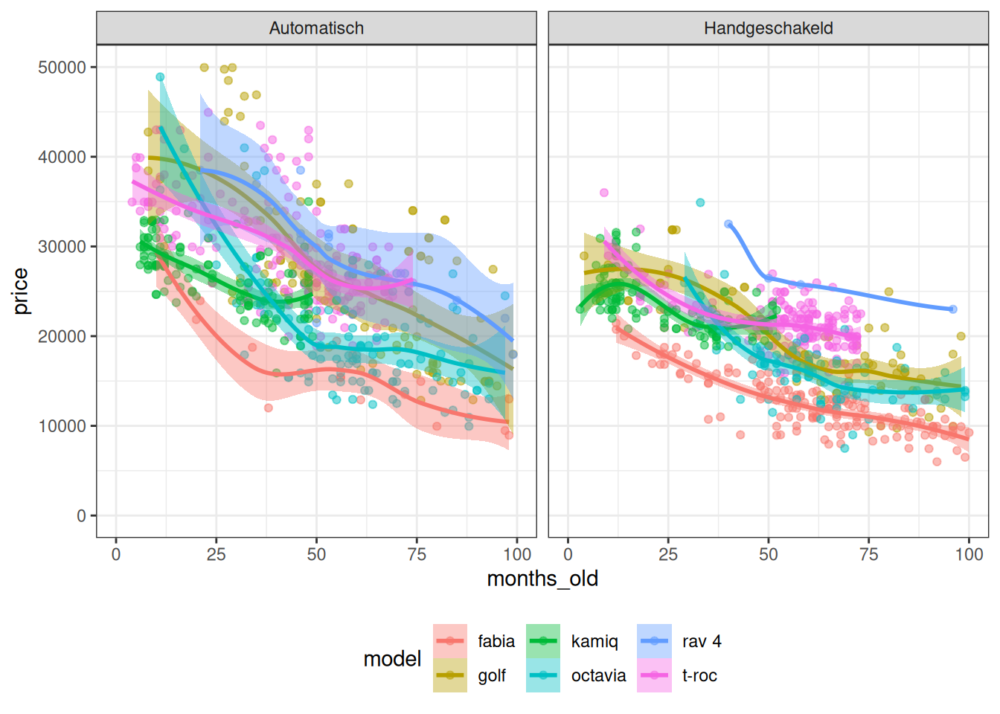

library(ggplot2)
library(data.table)
library(RColorBrewer)
library(splines)
library(magrittr)Used car prices
Data cleaning
dd = fread("data/extracted2024-02-26.csv")
dd[, .N, keyby=.(fuel_type, transmission)] fuel_type transmission N
1: 2 - Transmissie 2
2: 2 Automatisch 281
3: 2 Half/Semi-automaat 2
4: b - Transmissie 8
5: b Automatisch 729
6: b Half/Semi-automaat 11
7: b Handgeschakeld 1062
8: c Handgeschakeld 1
9: d - Transmissie 1
10: d Automatisch 30
11: d Handgeschakeld 87
12: e Automatisch 6
13: l Automatisch 1
14: l Handgeschakeld 1# drop non-benzine cars
dd = dd[fuel_type == "b"]
# drop unusual transmissions
dd = dd[transmission %in% c("Automatisch", "Handgeschakeld")]
# final check
dd[, .N, keyby=.(country, fuel_type, transmission)] country fuel_type transmission N
1: nl b Automatisch 729
2: nl b Handgeschakeld 1062ggplot(dd, aes(pmin(price, 50000), color=model, fill=model)) +
geom_density(alpha=0.5) +
scale_color_brewer(type='qual', palette=2) +
scale_fill_brewer(type='qual', palette=2) +
theme_bw()dd[, mileage := as.integer(mileage)]Warning in eval(jsub, SDenv, parent.frame()): NAs introduced by coerciondd[, reg_year := as.integer(sapply(strsplit(registration, "-", fixed=T), function(x) x[[2]]))]
dd[, reg_month := as.integer(sapply(strsplit(registration, "-", fixed=T), function(x) x[[1]]))]
dd[, months_old := 12*2024 + 1 - 12*reg_year - reg_month]
# remove new cars
dd = dd[months_old >= 3]
# remove antiques
dd = dd[months_old < 200]
# check distribution again
ggplot(dd, aes(pmin(price, 50000), color=model, fill=model)) +
geom_density(alpha=0.5) +
scale_color_brewer(type='qual', palette=2) +
scale_fill_brewer(type='qual', palette=2) +
theme_bw()dd[, hp := as.integer(regmatches(power, regexpr("[0-9-]{1,3}(?= PK)", power, perl=T)))]Warning in eval(jsub, SDenv, parent.frame()): NAs introduced by coercionPlots
Age vs. Price
ggplot(dd, aes(months_old, price, color=model, fill=model)) +
geom_point(alpha=0.5) +
geom_smooth() +
facet_wrap(~ transmission, ncol=2) +
scale_y_continuous(limits=c(0, 50000)) +
scale_x_continuous(limits=c(0, 100)) +
theme_bw() +
theme(legend.position="bottom")`geom_smooth()` using method = 'loess' and formula 'y ~ x'Warning: Removed 407 rows containing non-finite values (stat_smooth).Warning in simpleLoess(y, x, w, span, degree = degree, parametric =
parametric, : span too small. fewer data values than degrees of freedom.Warning in simpleLoess(y, x, w, span, degree = degree, parametric =
parametric, : pseudoinverse used at 39.72Warning in simpleLoess(y, x, w, span, degree = degree, parametric =
parametric, : neighborhood radius 18.28Warning in simpleLoess(y, x, w, span, degree = degree, parametric =
parametric, : reciprocal condition number 0Warning in simpleLoess(y, x, w, span, degree = degree, parametric =
parametric, : There are other near singularities as well. 2141.8Warning in predLoess(object$y, object$x, newx = if
(is.null(newdata)) object$x else if (is.data.frame(newdata))
as.matrix(model.frame(delete.response(terms(object)), : span too small. fewer
data values than degrees of freedom.Warning in predLoess(object$y, object$x, newx = if
(is.null(newdata)) object$x else if (is.data.frame(newdata))
as.matrix(model.frame(delete.response(terms(object)), : pseudoinverse used at
39.72Warning in predLoess(object$y, object$x, newx = if
(is.null(newdata)) object$x else if (is.data.frame(newdata))
as.matrix(model.frame(delete.response(terms(object)), : neighborhood radius
18.28Warning in predLoess(object$y, object$x, newx = if
(is.null(newdata)) object$x else if (is.data.frame(newdata))
as.matrix(model.frame(delete.response(terms(object)), : reciprocal condition
number 0Warning in predLoess(object$y, object$x, newx = if
(is.null(newdata)) object$x else if (is.data.frame(newdata))
as.matrix(model.frame(delete.response(terms(object)), : There are other near
singularities as well. 2141.8Warning: Removed 407 rows containing missing values (geom_point).Warning in max(ids, na.rm = TRUE): no non-missing arguments to max; returning
-Inf
# same plot, group by model
ggplot(dd, aes(months_old, price, color=transmission, fill=transmission)) +
geom_point(alpha=0.5) +
geom_smooth() +
facet_wrap(~ model, ncol=2) +
scale_y_continuous(limits=c(0, 50000)) +
scale_x_continuous(limits=c(0, 100)) +
theme_bw() +
theme(legend.position="bottom")`geom_smooth()` using method = 'loess' and formula 'y ~ x'Warning: Removed 407 rows containing non-finite values (stat_smooth).Warning in simpleLoess(y, x, w, span, degree = degree, parametric =
parametric, : span too small. fewer data values than degrees of freedom.Warning in simpleLoess(y, x, w, span, degree = degree, parametric =
parametric, : pseudoinverse used at 39.72Warning in simpleLoess(y, x, w, span, degree = degree, parametric =
parametric, : neighborhood radius 18.28Warning in simpleLoess(y, x, w, span, degree = degree, parametric =
parametric, : reciprocal condition number 0Warning in simpleLoess(y, x, w, span, degree = degree, parametric =
parametric, : There are other near singularities as well. 2141.8Warning in predLoess(object$y, object$x, newx = if
(is.null(newdata)) object$x else if (is.data.frame(newdata))
as.matrix(model.frame(delete.response(terms(object)), : span too small. fewer
data values than degrees of freedom.Warning in predLoess(object$y, object$x, newx = if
(is.null(newdata)) object$x else if (is.data.frame(newdata))
as.matrix(model.frame(delete.response(terms(object)), : pseudoinverse used at
39.72Warning in predLoess(object$y, object$x, newx = if
(is.null(newdata)) object$x else if (is.data.frame(newdata))
as.matrix(model.frame(delete.response(terms(object)), : neighborhood radius
18.28Warning in predLoess(object$y, object$x, newx = if
(is.null(newdata)) object$x else if (is.data.frame(newdata))
as.matrix(model.frame(delete.response(terms(object)), : reciprocal condition
number 0Warning in predLoess(object$y, object$x, newx = if
(is.null(newdata)) object$x else if (is.data.frame(newdata))
as.matrix(model.frame(delete.response(terms(object)), : There are other near
singularities as well. 2141.8Warning: Removed 407 rows containing missing values (geom_point).Warning in max(ids, na.rm = TRUE): no non-missing arguments to max; returning
-InfMileage vs Price
ggplot(dd, aes(mileage, price, color=model, fill=model)) +
geom_point(alpha=0.5) +
geom_smooth() +
facet_wrap(~ transmission, ncol=2) +
scale_y_continuous(limits=c(0, 50000)) +
scale_x_continuous(limits=c(10000, 150000), labels=function(x) x/1000) +
scale_color_brewer(type="qual", palette="Set2") +
scale_fill_brewer(type="qual", palette="Set2") +
labs(x="mileage (K)") +
theme_bw() +
theme(legend.position="bottom")`geom_smooth()` using method = 'loess' and formula 'y ~ x'Warning: Removed 366 rows containing non-finite values (stat_smooth).Warning: Removed 366 rows containing missing values (geom_point).# same plot, group by model
ggplot(dd, aes(mileage, price, color=transmission, fill=transmission)) +
geom_point(alpha=0.5) +
geom_smooth() +
facet_wrap(~ model, ncol=2) +
scale_y_continuous(limits=c(0, 50000)) +
scale_x_continuous(limits=c(10000, 150000), labels=function(x) x/1000) +
scale_color_brewer(type="qual", palette="Set1") +
scale_fill_brewer(type="qual", palette="Set1") +
labs(x="mileage (K)") +
theme_bw() +
theme(legend.position="bottom")`geom_smooth()` using method = 'loess' and formula 'y ~ x'Warning: Removed 366 rows containing non-finite values (stat_smooth).Warning: Removed 366 rows containing missing values (geom_point).Linear regression with non-linear features
# let's drop the RAV-4, it's too different and we don't have a lot of data for it
ddm_norav = dd[model != "rav 4"]
m1_norav = lm(price ~ model + ns(mileage, 2) + ns(months_old, 2) + transmission + ns(hp, 2), data=ddm_norav)
summary(m1_norav)
Call:
lm(formula = price ~ model + ns(mileage, 2) + ns(months_old,
2) + transmission + ns(hp, 2), data = ddm_norav)
Residuals:
Min 1Q Median 3Q Max
-10009.9 -1431.2 -57.2 1313.5 12356.3
Coefficients:
Estimate Std. Error t value Pr(>|t|)
(Intercept) 27005.0 358.9 75.244 < 2e-16 ***
modelgolf 3372.4 230.1 14.657 < 2e-16 ***
modelkamiq 2334.9 271.9 8.588 < 2e-16 ***
modeloctavia 1961.2 249.2 7.870 6.72e-15 ***
modelt-roc 5975.8 261.5 22.854 < 2e-16 ***
ns(mileage, 2)1 -15703.0 631.0 -24.887 < 2e-16 ***
ns(mileage, 2)2 -8894.2 733.5 -12.126 < 2e-16 ***
ns(months_old, 2)1 -22065.5 708.8 -31.131 < 2e-16 ***
ns(months_old, 2)2 -11423.5 359.5 -31.777 < 2e-16 ***
transmissionHandgeschakeld -2450.4 146.7 -16.709 < 2e-16 ***
ns(hp, 2)1 17275.5 793.1 21.782 < 2e-16 ***
ns(hp, 2)2 23142.9 565.6 40.919 < 2e-16 ***
---
Signif. codes: 0 '***' 0.001 '**' 0.01 '*' 0.05 '.' 0.1 ' ' 1
Residual standard error: 2299 on 1499 degrees of freedom
(5 observations deleted due to missingness)
Multiple R-squared: 0.9377, Adjusted R-squared: 0.9373
F-statistic: 2052 on 11 and 1499 DF, p-value: < 2.2e-16This is supposed to be a realistic model, with car age, mileage, and hp modeled as quadratic features (bendy line with max one hump or trough). The Skoda Fabia has been picked as the reference model, because it sorts model alphabetically by default.
This model seems to predict 94% of variability in the data. This could be overfitting, but I’m not afraid of this with such a simple model and so many data points. More likely we have accounted for the factors that affect the price correctly.
What do we see? Compared to a similar Fabia, we need to pay:
- 3372 more for a Golf
- 2335 more for a Kamiq
- 1961 more for an Octavia
- about 6k more for a T-Roc
We can also try to figure out the price changes caused by different features, but it’s not straightforward to read this from the parameters. We will try a simpler, fully linear, model so we can read those from the lm output.
Linear model
# change variable units so the coefficient values are easier to understand
m2_norav = lm(price ~ model + I(mileage/10000) + I(months_old/12) + transmission + hp, data=ddm_norav)
summary(m2_norav)
Call:
lm(formula = price ~ model + I(mileage/10000) + I(months_old/12) +
transmission + hp, data = ddm_norav)
Residuals:
Min 1Q Median 3Q Max
-9513.9 -1583.2 -382.2 1242.3 13922.0
Coefficients:
Estimate Std. Error t value Pr(>|t|)
(Intercept) 18030.773 346.189 52.08 < 2e-16 ***
modelgolf 2648.835 240.083 11.03 < 2e-16 ***
modelkamiq 3462.146 268.464 12.90 < 2e-16 ***
modeloctavia 827.183 238.359 3.47 0.000535 ***
modelt-roc 4875.068 237.920 20.49 < 2e-16 ***
I(mileage/10000) -447.784 17.238 -25.98 < 2e-16 ***
I(months_old/12) -919.076 28.652 -32.08 < 2e-16 ***
transmissionHandgeschakeld -2133.438 159.702 -13.36 < 2e-16 ***
hp 71.198 1.765 40.35 < 2e-16 ***
---
Signif. codes: 0 '***' 0.001 '**' 0.01 '*' 0.05 '.' 0.1 ' ' 1
Residual standard error: 2608 on 1502 degrees of freedom
(5 observations deleted due to missingness)
Multiple R-squared: 0.9197, Adjusted R-squared: 0.9193
F-statistic: 2150 on 8 and 1502 DF, p-value: < 2.2e-16This model is simpler, but has a very similar R-squared, so it’s not very biased compared to the previous one (good!).
The model differences are similar, but the values from the non-linear model should be more reliable. That model (probably) accounts for the car features better.
What do we read here? Everything else equal, a used car’s price changes like this:
- Loses EUR 450 for every 10k KM
- Loses EUR 920 for every year on the road
- Costs EUR 2200 more if automatic
- Gains EUR 710 for every extra 10 HP
Prediction
# how many hp does a typical Fabia have?
dd[(model=="fabia") & (transmission=="Handgeschakeld"), hp] %>% hist# describe the car we're looking for
typical_car = data.frame(model="fabia", mileage=70000, months_old=12*5, transmission="Handgeschakeld", hp=90)
# 50% of typical 5-year, 70K km, stick Fabias should be between
predict(m1_norav, newdata=typical_car) + quantile(resid(m1_norav), probs=c(0.25, 0.75)) 25% 75%
12489.3 15234.0 # check the linear model just for certainty
predict(m2_norav, newdata=typical_car) + quantile(resid(m2_norav), probs=c(0.25, 0.75)) 25% 75%
12992.13 15817.62